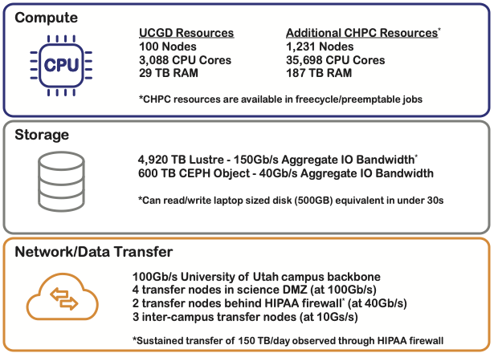

UCGD Compute Infrastructure at the U of U CHPC
Carson Holt, 23 September 2022
The Cardiovascular Development Data Resource Center (CDDRC) is backed by a significant compute infrastructure owned and managed by the Utah Center for Genetic Discovery (UCGD) and housed at the University of Utah's Center for High Performance Computing. The UCGD owns 100 nodes which provide 3,088 cores of compute power and a collective 29 TB of RAM. Most of these nodes are in a Slurm based HPC cluster, but several interactive nodes provide for real-time analysis and development work. In addition to UCDG owned nodes, we also have guest access to an additional 1,231 nodes which provide 35,698 cores of compute power and collectively have over 187 TB of RAM.
The UCGD also owns 4,920 TB of Lustre high performance, distributed file system that boast 150 Gb/s aggregate bandwidth. This provides the ability to read a laptop's worth of data (500GB) in under 30 seconds. In addition, the UCGD owns 600 TB of S3 compatable CEPH object storage with 40 GB/s aggregate bandwidth.
All of these nodes and storage are connected at 100 Gb/s across the University of Utah network backbone and to the outside world via 4 transfer nodes in the science DMZ connecting at 100 Gb/s each, 2 transfer nodes connecting through our HIPPA class firewall into the CHPC 'Protected Environment' at 40 Gb/s each, and 3 inter-campus transfer nodes operating at 10 Gb/s each. These network connections have allowed us to sustain real observed transfers as high as 150 TB per day across the HIPPA class firewall.
Collectively this compute infrastructure provides a rock solid platform for the Cardiovascular Development Data Resource Center!
Figure 1. Summary of UCGD compute infrastructure housed at the University of Utah's Center for High Performance Computing.